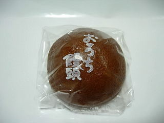

日吉製菓のおろち饅頭
2009/3/22
ちょっと味の濃い黒糖饅頭でした。

食の祭典2009in出雲ドームで販売していたのを買いました。
1つから気軽に買えて良かったです。
黒糖の味と香りがしっかりしてて、味わい深かったです。
島根県出雲市長浜町659-19
2009/3/22
ちょっと味の濃い黒糖饅頭でした。

食の祭典2009in出雲ドームで販売していたのを買いました。
1つから気軽に買えて良かったです。
黒糖の味と香りがしっかりしてて、味わい深かったです。